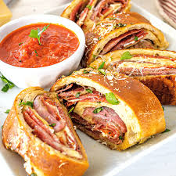

Home
2. Easy Stromboli Recipe

Roll out the dough into a 10 x 16-inch rectangle.
Brush with melted butter, garlic, and a little pizza sauce.
Leave a 3-inch gap on one side and a 1-inch gap around the other sides.
Add fillings and roll tightly, keep the fillings from rolling forward.
Tuck the outer edges underneath to seal.
Brush with egg wash and sprinkle with Parmesan and parsley.
Bake at 400° for 25 minutes.
Ingredients
- Dough (Or 1 lb. store-bought dough)
- Stromboli
- 2 tablespoons olive oil
- 2 tablespoons grated Parmesan
Steps
- In a small bowl, dissolve the yeast and sugar in warm water. Cover with plastic wrap and set aside for 5 minutes.
- In a large bowl, add the salt, garlic powder, and HALF of the flour.
- Dust your hands with flour and knead the dough in the bowl for 3-5 minutes.
- Drizzle a separate large glass bowl with a little olive oil and use a pastry brush to distribute the oil on the bottom and sides.
- Bake stromboli for 25 minutes.